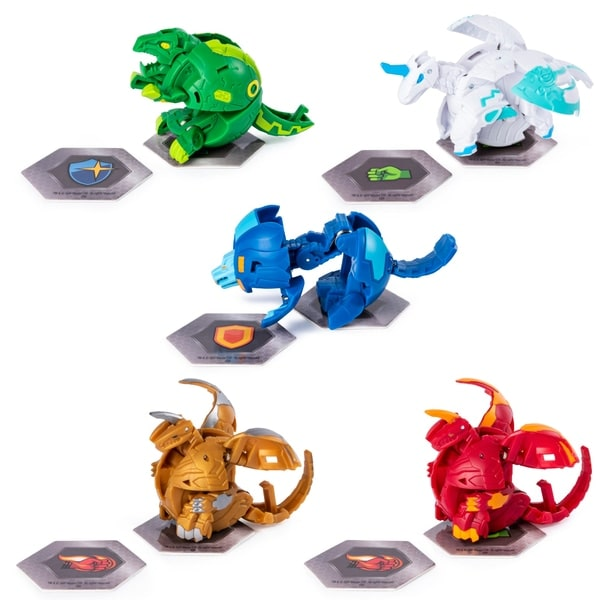

BAKUGAN
Introduction
A strategic game called Bakugan was developed by Sega Toys and Spin Master and released in conjunction with the anime series, albeit beginning a year before the anime even started (2006). The game uses spherical, spring-loaded miniature figures, representing the Bakugan, which pop open when rolled onto special metal Gate cards. The objective of the game is to capture three Gate cards.
How to play
- Each player needs 3 Bakugan and 6 cards (3 gate cards and 3 character cards)
- Each player place a gate card in the middle(battlefeld) faced down every turn.
- Then both players try to roll one of their chosen bakugan on to the gate card.
- If the bakugan opens and sits on a card it is called a “stand”. IF it misses the card or did not open it is returned to the owner and skipped their turn.
- If a gate card has a bakugan from both players it will commence “battle mode”.
- In battle mode, the card that the bakugans is standing on is revealed (flipped).
- In battle mode, the card that the bakugans is standing on is revealed (flipped).
- Whoever, got the highest points total gets to capture the gate card.
- First to capture 3 gate cards wins.
Origins
Bakugan Battle Brawlers (爆丸 バトルブローラーズ, Bakugan Batoru Burōrāzu) is a Japanese-Canadian anime adventure television series produced by TMS Entertainment, Dentsu Inc., and Nelvana Animation under the direction of Mitsuo Hashimoto. The story centers on the lives of creatures called Bakugan and the "battle brawlers" who possess them. The Bakugan franchise itself is a joint venture between Sega Toys and Spin Master. Although originally broadcast by TV Tokyo in Japan, follow-up seasons (New Vestroia and Gundalian Invaders), premiered in Canada and the US before Japan. The fourth and final season, Mechtanium Surge, was never broadcast in Japan and instead aired in North American markets. However, a Japan-exclusive manga series, Baku Tech! Bakugan, ran from August 15, 2010 to January 15, 2014. This received an anime adaption aired on TV Tokyo from April 7, 2012 to March 30, 2013, followed by a second season called Baku Tech! Bakugan Gachi which ran from April 6, 2013 to December 28, 2013. In 2015, Spin Master revealed plans to relaunch Bakugan. The relaunch was later announced on November 30, 2017 to occur in the first quarter of 2019, with the series title announced as Bakugan: Battle Planet.[6] The new series premiered on Cartoon Network in the United States on December 23, 2018, while Canada's Teletoon premiered the series on December 31, 2018.
Videos
FORUM
Bakugan
Support Nostalgia Team
by sharing your story, experience and tips with other users under Forum section on each game pages.